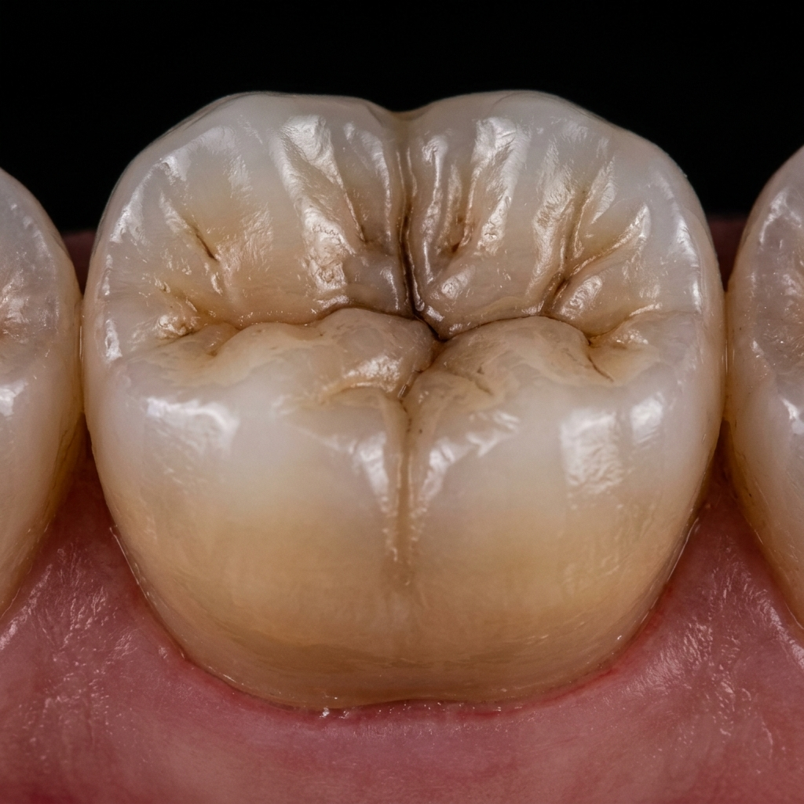
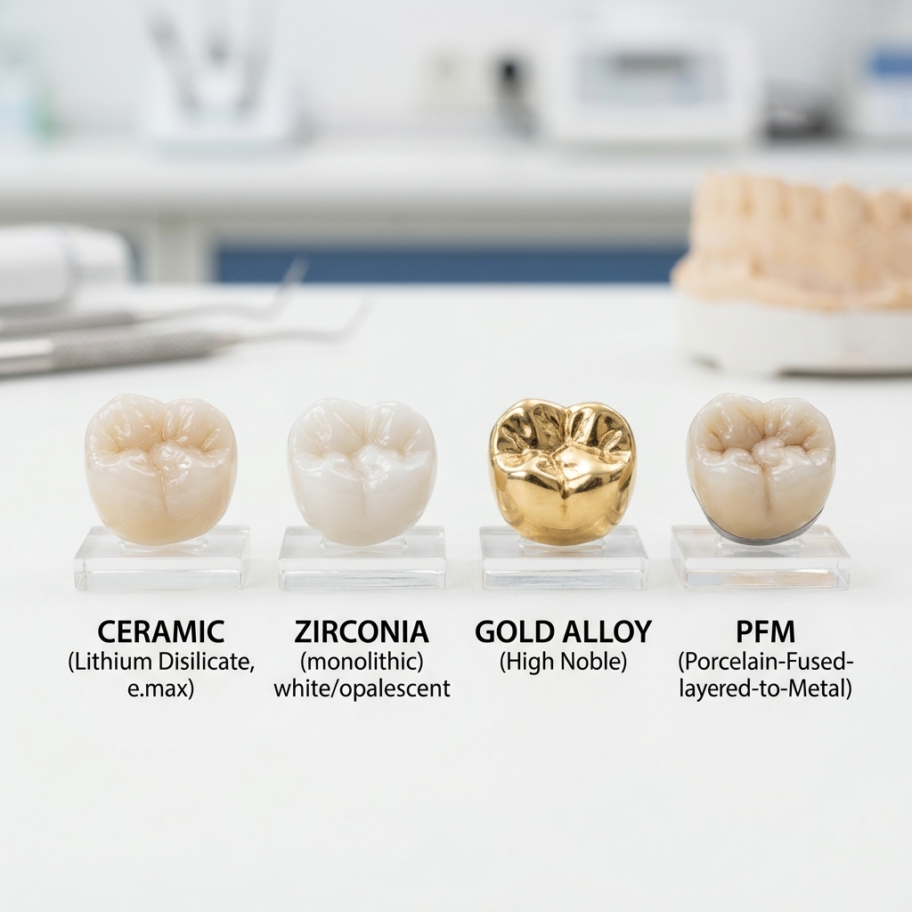
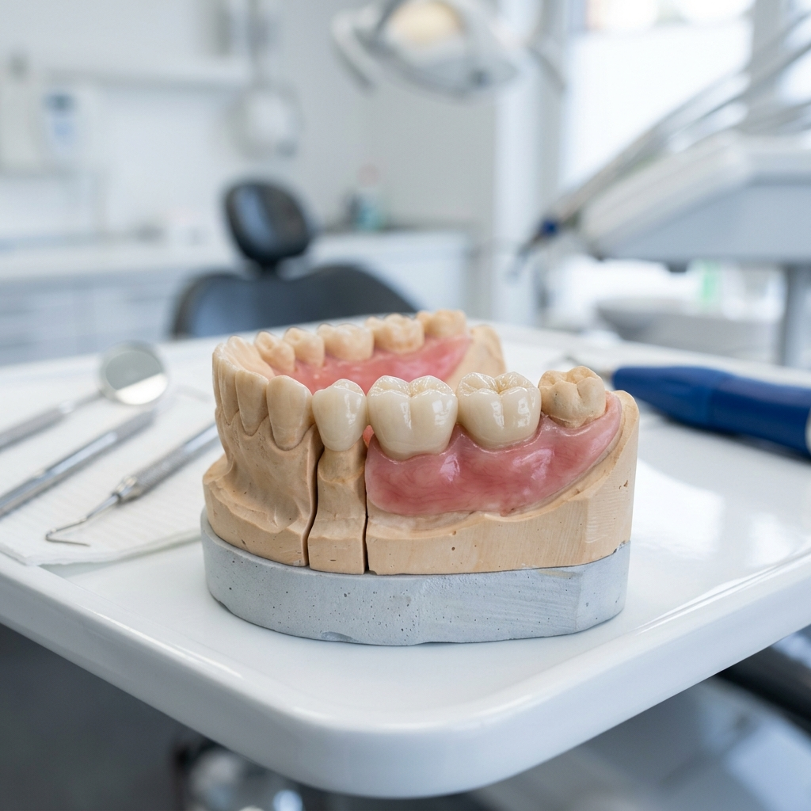

Restore the strength, function, and natural beauty of your smile with our premium custom-crafted crowns and bridges.
Dental problems like damaged, broken, or missing teeth can affect not only your smile but also your ability to chew and speak comfortably. One of the most reliable and long-lasting solutions in modern dentistry is Dental Crowns & Bridges Treatment.
If you are searching for the best dental clinic in Dammaiguda, Hyderabad, Telangana, getting treatment at Vijaya Dental & Implant Center ensures a premium and highly professional experience. We combine artistic craftsmanship with advanced dental science to create restorations that are indistinguishable from your natural teeth.
Whether you need to protect a weakened tooth with a crown or replace missing teeth with a fixed bridge, our team provides personalized solutions designed for lifetime durability.

Aesthetic Excellence: Our crowns capture the natural translucency of real teeth.

A dental crown is a custom-made cap that covers the entire visible portion of a tooth. It is designed to restore the tooth’s shape, size, strength, and appearance. At Vijaya Dental, we recommend crowns for several critical reasons:
100% metal-free. Best for front teeth due to their incredible natural appearance and light reflection.
The modern standard. Highly durable, biocompatible, and aesthetic. Ideal for both front and back teeth.
Porcelain-Fused-to-Metal. A tried-and-tested combination of structural strength and cosmetic porcelain.
A dental bridge is used to replace one or more missing teeth. It consists of artificial teeth (pontics) supported by crowns placed on adjacent teeth (abutments). If you have gaps in your smile, a bridge is vital for more than just aesthetics:
For those looking for a fixed, non-removable alternative to partial dentures, a bridge offers superior comfort and a more natural feel.

A simple, painless, and high-precision process at Vijaya Dental.
We perform a detailed examination and digital X-rays to assess the tooth structure.
The tooth is gently reshaped to create room for the premium crown or bridge.
A high-precision impression is taken to ensure your new tooth fits perfectly with your bite.
The final, custom-crafted crown or bridge is securely bonded for a permanent result.
Improve your ability to chew and speak with a stable, fixed solution that won't move.
Our digital shade-matching ensures your restoration blends perfectly with your natural teeth.
With proper care, our high-grade Zirconia and Ceramic crowns can last 15+ years.
Prevent further fracturing of teeth that have large fillings or have undergone root canals.
No. We use local anesthesia during the tooth preparation phase. You may feel slight sensitivity for a few days after placement, but the procedure itself is painless.
Most crowns and bridges last between 10 and 20 years. Their longevity depends on your oral hygiene habits and regular dental checkups.
Yes! Once the permanent crown is cemented and the adhesive has fully set (usually 24 hours), you can eat all your favorite foods comfortably.
Zirconia is generally preferred for its superior aesthetics (no dark metal line at the gum) and its incredible strength, though PFM is still a great, cost-effective option.
Keep the crown safe and call us immediately. In many cases, if the tooth and crown are undamaged, we can professionally recement it for you.
You brush it just like natural teeth, but you'll need to use "superfloss" or an interproximal brush to clean underneath the artificial tooth (pontic).